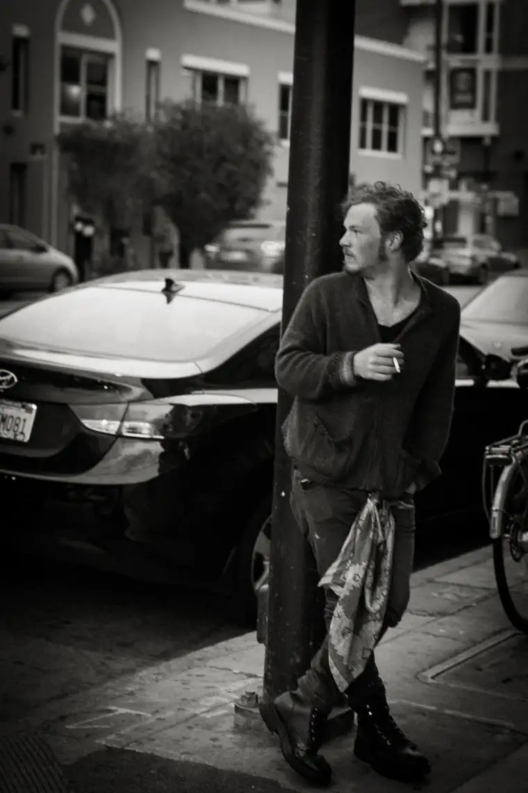

Recently, I noticed a newcomer to the sidewalk in front of The Red River Women’s Clinic, our state’s only abortion facility.As a regular prayer advocate who spends time there most Wednesdays, when abortions take place here in Fargo, I find it easy to distinguish the “regulars” from those who are new.[/caption]This particular gentleman was, for one, not dressed for the weather. Those who come often and stay a while know in winter especially, toes and fingers can grow numb quickly out there.
Sporting a blue, corduroy blazer, but no thick coat, the nice-looking man with the raven hair and azure eyes puffed on a cigarette, appearing a bit aimless. Curious, I approached him to see what was up.
“I’m neutral, just observing,” he said, explaining that, as the owner of a tech company, he was conducting “research” to discern social behavior habits.
Particularly, he wanted to know what motivates people to actively protest a certain issue; in this case, what prompts those who are strongly pro-life to speak out and others equally strong in their convictions to remain silent?
Offering him my thoughts, I found myself challenged, because though I have explored my motives for what brings me to the sidewalk when I’d rather be doing so many other things instead, it’s difficult to explain in secular terms. And from what I could gather, his study was purely “scientific.”
But I did my best, divulging how, initially, the accounts of post-abortive women, forever wounded by abortion, had moved me to do more than just pray.
I told him, too, how it took me a while – many years – to summon the courage to commit to showing up with my Rosary beads to witness love and hope to the women who go there to end the lives within them, lured by the empty promise that their world will be restored to how it was before.
I explained how being a mother myself had stirred me, knowing on a deep level how attached we are as mothers to our children, and how unnatural it is to cut ourselves off from the lives within us, even when they come at an inconvenient time.
Sometimes, it’s just a matter of logistics, I said. Not everyone can leave work or other obligations to follow up on their passions. Simply put, the season we’re in often dictates our priorities.
I couldn’t tell from his expressions whether my revelations were helpful. Finally, as a last resort, I brought up the reality of faith, and how that, most of all, had brought me to the sidewalk.
At that point, the conversation trailed off. Either he didn’t find that reason credible, or he just didn’t understand. The connection seemed lost.
As he began talking to another gentleman, I felt frustrated at the ever-widening gap between the supernatural and natural worlds.
How can one explain the reality of a mostly invisible spiritual battle that is perhaps more intense at this corner than anywhere else in our city, and how palpable it feels? Or the grace I’ve felt God extend when I’ve connected with one of the mothers or their partners in some small way?
I can’t precisely explain what it feels like each Wednesday night when I bring the faces I’ve seen there during the day into the Adoration chapel to present them to God, long after the clients themselves have gone home.
Even if he were willing to hear my story through, would it matter? What could I offer his research on human behavior that can only be measured in tangible terms?
There is much the heart cannot explain. And although I might not have contributed very much to his research, I’m convinced all is not lost. Perhaps something I said began working on his soul hours, or even days, later, not for research purposes, but something much greater: the Lord’s salvific purposes for him.
Only God knows, but to me, he’s more than a business man looking to make a buck. I see him as a child of the Father, lost and looking for hope and life, whether he knows it.
It’s as much for this stranger that I go each week to the sidewalk, which is ripe for conversion stories. I don’t want to miss the chance for God to work through me. Humbly, I pray he will.
I look forward to sharing more “Sidewalk Stories” soon. Meantime, I’d be grateful for your prayers for those who gather on the sidewalk each week, whatever the reason.
[The preceding was my inaugural “Sidewalk Stories” column for New Earth magazine, the official news publication of the Fargo Diocese, which ran in Jan. 2017. I hope you find “Sidewalk Stories” helpful in understanding the truth about abortion and how it plays out tragically each week here in Fargo, N.D.]